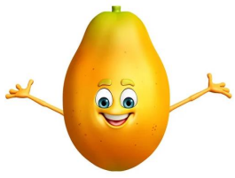
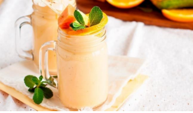

Mamão Papaya
Benefícios
Ação laxativa e antiinflamatória, além de fortalecer o sistema imunológico, prevenindo doenças como gripes e resfriados (FUNADA, 2022). Rico em vitaminas A, C, além de potássio, folato, niacina, tiamina, riboflavina, ferro, cálcio e fibras (FUNADA, 2022).
Esse produto possui agrotoxico* Produto colhido na fazenda São Jão*
Receita: Vitamina de mamão com banana
Tempo de preparo: 5 minutos / Rendimento: 3 copos
Ingredientes
- 600 ml de leite;
- ½ mamão papaya;
- 3 bananas;
- 6 pedras de gelo;
Modo de Preparo
- No liquidificador, coloque todos os ingredientes.
- Bata por aproximadamente 3 minutos.
- Depois de ficar homogêneo, basta servir.